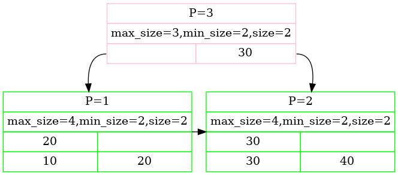

Project #2 - B+Tree
Remember to pull the latest code from the bustub repository. Do not post your code on a public GitHub repository.
Overview
In this project you will implement a B+Tree index in your database system. A B+Tree is a balanced search tree in which the internal pages direct the search and leaf pages contain the actual data entries. The index provides fast data retrieval without needing to search every row in a database table, enabling rapid random lookups and efficient scans of ordered records. Your implementation will support thread-safe search, insertion, deletion (including splitting and merging nodes), and an iterator to support in-order leaf scans. You need to complete the following tasks:
- Task #1 - B+Tree Pages
- Task #2 - B+Tree Operations (Insertion, Deletion, and Point Search)
- Task #3 - Index Iterator
- Task #4 - Concurrency Control
Your work in Project #2 depends on your implementation of the buffer pool and page guards from Project #1. If your Project #1 solution is incorrect, you MUST fix it to successfully complete this project. This project must be completed individually (i.e., no groups).
- Release Date: Sep 29, 2025
- Due Date: Oct 26, 2025 @ 11:59pm
Project Specification
We have provided stub classes that define the APIs that you must implement. You should not modify the signatures of these pre-defined functions; if you do, our test code will not work and you will receive little or no credit for the project. Similarly, you should not remove existing member variables from the code we provide. You may add functions and member variables to these classes to implement your solution.
Before you start, run git pull public master to pull the latest code from the public BusTub repository.
Task #1 - B+Tree Pages
You must implement the following three Page classes to store the data of your B+Tree.
Base Page
This is a base class that the Internal Page and Leaf Page inherit from, and contains only information that both child classes share. The B+Tree Page has the following fields:
| Variable Name | Size | Description |
|---|---|---|
| page_type_ | 4 | Page type (invalid page / leaf page / internal page) |
| size_ | 4 | Number of key & value pairs in a page |
| max_size_ | 4 | Max number of key & value pairs in a page |
You must implement the B+Tree Page by modifying only its header file (src/include/storage/page/b_plus_tree_page.h ) and the corresponding source file (src/storage/page/b_plus_tree_page.cpp ).
Internal Page
An Internal Page (i.e., inner node) stores m ordered keys and m + 1 child pointers (i.e. page_ids) to other B+Tree Pages.
These keys and pointers are internally represented as an array of key/page_id pairs.
As the number of child pointers is one more than the number of keys, the first key in key_array_ (see src/include/storage/page/b_plus_tree_internal_page.h ) is set to be invalid, and lookups should always start from the second key.
At any time, each internal page should be at least half full. During deletion, two half-full pages can be merged, or keys and pointers can be redistributed to avoid merging. During insertion, one full page can be split into two, or keys and pointers can be redistributed to avoid splitting. These are examples of the many design choices that you will make while implementing your B+Tree.
You must implement the Internal Page by modifying only its header file (src/include/storage/page/b_plus_tree_internal_page.h ') and the corresponding source file (src/storage/page/b_plus_tree_internal_page.cpp ).
Leaf Page
The Leaf Page stores m ordered keys and their m corresponding values.
In your implementation, the value should always be the 64-bit record id for where the actual tuples are stored -- see the RID class, in src/include/common/rid.h .
Leaf pages have the same restrictions on the number of key/value pairs as Internal pages, and should follow the same operations for merging, splitting, and redistributing keys.
For this project, we will extend our leaf page implementation by also including a tombstone buffer for recent deletions. This tombstone buffer stores the last k indexes of entries in key/value arrays that have been deleted. Thus, when a key is deleted from the index (if k > 0) its entry in its corresponding leaf page is not actually deleted but the index is appended to the tombstone buffer. Only when the buffer of said leaf page has k entries in it is the oldest buffered deletion actually applied to the key/value arrays. This is a simplified version of the Bε-tree discussed in the lectures.
You must implement GetTombstones() to report the keys that the tombstones in a given page correspond to. KeyAt must however return the physical entry at a given index regardless of whether a tombstone exists for that entry.
You must implement your Leaf Page by modifying only its header file (src/include/storage/page/b_plus_tree_leaf_page.h ) and corresponding source file (src/storage/page/b_plus_tree_leaf_page.cpp ).
Note: Even though Leaf Pages and Internal Pages contain the same key type, they may have different value types. Thus, the max_size can be different.
Each B+Tree leaf/internal page corresponds to the content (i.e., the data_ part) of a memory page fetched by the buffer pool.
Every time you read or write from/to a leaf or internal page, you must first fetch the page from the buffer pool (using its unique page_id),
Use reinterpret cast to convert it to either a leaf or an internal page, and unpin the page after reading or writing from/to it.
Task #2 - B+Tree Operations (Insertion, Deletion, and Point Search)
In this task, your B+Tree Index needs to support insertion (Insert()), deletion (Remove()), and search (GetValue()) for single values.
The index should support only unique keys; if you try to reinsert an existing key into the index, insertion should not be performed and false will be returned. You must implement
this task by modifying the source file src/storage/index/b_plus_tree.cpp and optionally it's corresponding header file src/include/storage/index/b_plus_tree.h .
B+Tree pages should be split (or keys should be redistributed) if an insertion would violate the B+Tree's invariants. Furthermore, leaf page tombstones (and their ordering) must be maintained across any merging, splitting, and redistributing operations. When a leaf is coalesced or redistributed into another leaf we consider all of its pending deletions to be more recent than any pending deletion in the recipient leaf (in other words: the node with entries being inserted into it should have its tombstones processed first).
If an insertion changes the page ID of the root, you must update the root_page_id in the B+Tree index's header page.
You can do this by accessing the header_page_id_ page, which is given to you in the constructor.
Then, by using reinterpret cast , you can interpret this page as a BPlusTreeHeaderPage (from src/include/storage/page/b_plus_tree_header_page.h ) and update the root page ID from there.
You also must implement GetRootPageId.
Similarly, your B+Tree Index must support including merging or redistributing keys between pages if necessary to maintain the B+Tree invariants when deleting a key. As with insertions, you must correctly update the B+Tree's root page ID if the root changes.
We recommend that you use the page guard classes from Project #1 to avoid synchronization problems.
You should use ReadPage or WritePage accordingly.
You may optionally use the Context class (defined in src/include/storage/index/b_plus_tree.h ) to track the pages that you've read or written (via the read_set_ and write_set_ fields) or to store other metadata that you need to pass into other functions recursively.
If you are using the Context class, here are some tips:
- You might only need to use
write_set_when inserting or deleting. It is possible that you do not useread_set_, depending on your implementation. - You might want to store the root page id in the context and acquire write guard of header page when modifying the B+Tree.
- To find a parent of the current node, look at the back of
write_set_. It should contain all nodes along the access path. - You may use
BUSTUB_ASSERTto help you find inconsistent data in your implementation. For example, if you want to split a node (except root), you should ensure that there is still at least one node in thewrite_set_. If you need to split root, you should check ifheader_page_isstd::nullopt. - To unlock the header page, simply set
header_page_tostd::nullopt. To unlock other pages, pop from thewrite_set_and drop.
The B+Tree is parameterized on arbitrary key, value, and key comparator types.
We've defined a macro, INDEX_TEMPLATE_ARGUMENTS, that generates the template parameter declaration for you:
template <typename KeyType,
typename ValueType,
typename KeyComparator>
The type parameters are:
KeyType: The type of each key in the index. In practice this will be aGenericKey. The actual size of aGenericKeyvaries, and is specified with its own template argument that depends on the type of indexed attribute.ValueType: The type of each value in the index. In practice, this will be a 64-bit RID.KeyComparator: A class used to compare whether twoKeyTypeinstances are less than, greater than, or equal to each other. These will be included in theKeyTypeimplementation files.
Task #3 - Index Iterator
After you have implemented and thoroughly tested your B+Tree in Tasks #1 and #2, you must add a C++ iterator that efficiently supports an in-order scan of the entries in the index. The basic idea is store sibling pointers so that you can efficiently traverse the leaf pages, and then implement an iterator that iterates through every key-value pair, in order, in the index. Note that this iterator must respect tombstones and thus you should skip any key-value pair with a corresponding tombstone.
Your iterator must be a C++17-style Iterator, including at least the following methods:
isEnd(): Return whether this iterator is pointing at the last key/value pair.operator++(): Move to the next key/value pair.operator*(): Return the key/value pair this iterator is currently pointing at.operator==(): Return whether two iterators are equal.operator!=(): Return whether two iterators are not equal.
Your BPlusTree also must correctly implement begin() and end() methods, to support C++ for-each loop functionality on the index.
You must implement your index iterator by modifying only its header file (src/include/storage/index/index_iterator.h ) and corresponding source file (src/index/storage/index_iterator.cpp ).
Task #4 - Concurrency Control
In the last task, you will modify your B+Tree implementation so that it safely supports concurrent operations. You should use the optimistic latch coupling/crabbing technique described in class and in the textbook. The thread traversing the index should acquire latches on B+Tree pages as necessary to ensure safe concurrent operations, and should release latches on parent pages as soon as possible when it is safe to do so.
Note: You should never acquire the same read latch twice in a single thread. It might lead to deadlock.
Leaderboard Task (Optional)
The leaderboard task is a measurement of how fast your B+Tree Index compared to other students' implementations. The B+Tree benchmark runner (tools/btree_bench/btree_bench.cpp ) uses multiple threads to concurrently read and update the index using different access patterns.
Optimizing for the leaderboard is optional (i.e., you can get a perfect score in the project after finishing all previous tasks). However, your solution must finish the leaderboard test with a correct result and without deadlock and segfault.
We will run your B+Tree with a NumTombs value of -1 which means we will not enforce any specific behavior concerning tombstoning. You can modify the LEAF_PAGE_DEFAULT_TOMB_CNT macro to use your own custom default number of tombstones in this case.
One simple optimization we recommend as a starting point is considering more efficient representations of tombstones. You may also want to refer to existing work surrounding B+ tree variants and optimizations (e.g. Bε-tree paper, Goetz Grafe books). You may assume that only integer keys will be used in the leaderboard task.
Instructions
See the Project #0 instructions on how to create your private repository and setup your development environment.
Development Roadmap
There are several ways in which you could go about building a B+Tree Index. This road map only serves as a rough conceptual guideline, which is based on the algorithm outlined in the textbook. You could end up with a semantically correct B+Tree that passes all our tests even without strictly following the roadmap. The choice is entirely yours.
- Simple Inserts: Given a key-value pair KV and a non-full node N, insert KV into N. Self check: What are the different types of nodes and can key-values be inserted in all of them?
- Simple Search: Given a key K, define a search mechanism on the tree to determine the presence of the key. Self check: Can keys exist in multiple nodes and are all these keys the same?
- Simple Splits: Given a key K, and a target leaf node L that is full, insert the key into the tree, while keeping the tree consistent. Self check: When do you choose to split a node and how to define a split?
- Multiple Splits: Define inserts for a key K on a leaf node L that is full, whose parent node M is also full. Self check: What happens when the parent of M is also full?
- Simple Deletes: Given a key K and a target leaf node L that is at-least half full, delete K from L. Self check: Is the leaf node L the only node that contains the key K?
- Simple Coalesces: Define deletion for a key K on a leaf node L that is less than half-full after the delete operation. Self check: Is it mandatory to coalesce when L is less than half-full and how do you choose which node to coalesce with?
- Not-So-Simple Coalesces: Define deletion for a key K on a node L that contains no suitable node to coalesce with. Self check: Does coalescing behavior vary depending on the type of nodes? This should take you through to Task 1 and 2.
- Index Iterators: The section on Task #3 describes the implementation of an iterator for the B+Tree.
- Concurrent Indexes: The section on Task #4 describes the implementation of the latch crabbing technique to support concurrency in your design.
Requirements and Hints
- You are not allowed to use a global latch to protect your data structure; your implementation must support a reasonable level of concurrency. In other words, you may not latch the whole index and only unlatch when operations are done.
- We recommend that you use the page guard classes
ReadPageGuardandWritePageGuardto implement thread safety for your B+Tree. You can receive full credit on this project if you use these constructs correctly. - You may add functions to your implementation as long as you keep all our original public interfaces intact for testing purposes.
- Do not use
mallocornewto allocate large blocks of memory for your tree. If you need to need to create a new node for your tree or need a buffer for some operation, you should use the buffer pool manager. - Use binary search to find the place to insert a value when iterating an internal or leaf node. Otherwise, your implementation will probably timeout on Gradescope.
- We recommend (but do not require) that you to follow this rule when implementing split: split a leaf node when the number of values reaches
max_sizeafter insertion, and split an internal node when number of values reachesmax_sizebefore insertion. This will ensure that an insertion to a leaf node will never cause a page data overflow when you do something likeInsertIntoLeafand then redistribute; it will also prevent an internal node with only one child. However, you indeed can do something like lazily splitting leaf node / handling the case for internal node of only one children. It is up to you; our test cases do not test for these conditions.
Common Pitfalls
- We do not test your iterator for thread-safe leaf scans. A correct implementation, however, would require the Leaf Page to throw a
std::exceptionwhen it cannot acquire a latch on its sibling to avoid potential dead-locks. - If you implement a concurrent B+Tree index correctly, every thread will always acquire latches from the header page to the bottom. When you release latches, make sure you release them in the same order (from the header page to the bottom).
- When implementing the page classes (Task 1), make sure you only add class fields of trivially-constructed types (e.g.
int). Do not add vectors and do not modifykey_array_andvalue_array_.
Testing
You can test your B+ Tree implementation locally using the folloing tests:
- test/storage/b_plus_tree_insert_test.cpp
- test/storage/b_plus_tree_sequential_scale_test.cpp
- test/storage/b_plus_tree_delete_test.cpp
- test/storage/b_plus_tree_concurrent_test.cpp
We strongly encourage you to write additional test cases for yourself to better understand your implementation. Although the public tests cover the most use cases, the grading script will test with more complicated access patterns.
You can test the individual components of this assigment using our testing framework. We use GTest for unit test cases.
You can compile and run each test individually from the command line:
$ mkdir build $ cd build $ make b_plus_tree_insert_test -j$(nproc) $ ./test/b_plus_tree_insert_test
You can also run make check-tests to run all the test cases.
Note that some tests are disabled as you have not implemented future projects.
You can disable tests in GTest by adding a DISABLED_ prefix to the test name.
Tree Visualization
BusTub includes a built-in tool (tools/b_plus_tree_printer/b_plus_tree_printer.cpp ) for generating a graphical representation of your B+Tree. This tool will help you check your solution for correct behavior to ensure it is performing the splits and merges correctly.
To generate a dot file after constructing a tree:
# To build the tool $ mkdir build $ cd build $ make b_plus_tree_printer -j $ ./bin/b_plus_tree_printer >> ... USAGE ... >> 5 5 // set leaf node and internal node max size to be 5 >> f input.txt // Insert into the tree with some inserts >> g my-tree.dot // output the tree to dot format >> q // Quit the test (Or use another terminal)
You should now have a my-tree.dot file with the DOT file format in the same directory as your test binary, which you can then visualize with a command line visualizer or an online visualizer:
- Dump the content to http://dreampuf.github.io/GraphvizOnline/.
- Or download a command line tool for your platform. Then create a PNG file of your tree using this command:
dot -Tpng -O my-tree.dot
Consider the following example generated with GraphvizOnline:

- Rectangles in Pink represent internal nodes, those in Green represent leaf nodes.
- The first row
P=3tells you the page id of the tree page. - The second row prints out the properties.
- The third row in a leaf node prints out the keys of tombstoned entries.
- The third/fourth row prints out keys, and pointers from internal node to the leaf node is constructed from internal node's value.
- Note that the first box of the internal node is empty. This is not a bug.
You can also compare with our reference solution running in your browser.
Formatting
Your code must follow the Google C++ Style Guide. We use Clang to automatically check the quality of your source code. Your project grade will be zero if your submission fails any of these checks.
Execute the following commands to check your syntax.
The format target will automatically correct your code.
The check-lint and check-clang-tidy-p2 targets will print errors and instruct you how to fix it to conform to our style guide.
$ make format $ make check-lint $ make check-clang-tidy-p2
Memory Leaks
For this project, we use LLVM Address Sanitizer (ASAN) and Leak Sanitizer (LSAN) to check for memory errors. To enable ASAN and LSAN, configure CMake in debug mode and run tests as you normally would. If there is a memory error, you will see a memory error report. Note that MacOS only supports address sanitizer without leak sanitizer.
In some cases, address sanitizer might affect the usability of the debugger. In this case, you might need to disable all sanitizers by configuring the CMake project with:
$ cmake -DCMAKE_BUILD_TYPE=Debug -DBUSTUB_SANITIZER= ..
Development Hints
You can use BUSTUB_ASSERT for assertions in debug mode.
Note that the statements within BUSTUB_ASSERT will NOT be executed in release mode.
If you have something to assert in all cases, use BUSTUB_ENSURE instead.
We encourage you to use a graphical debugger to debug your project if you are having problems.
If you are having compilation problems, running make clean does not completely reset the compilation process.
You will need to delete your build directory and run cmake .. again before you rerun make.
Post all of your questions about this project on Piazza. Do not email the TAs directly with questions.
Grading Rubric
Each project submission will be graded based on the following criteria:
- Does the submission successfully execute all of the test cases and produce the correct answer?
- Does the submission execute without any memory leaks?
- Does the submission follow the code formatting and style policies?
Late Policy
See the late policy in the syllabus.
Submission
After completing the assignment, you can submit your implementation to Gradescope:
Running make submit-p2 in your build/ directory will generate a zip archive called project2-submission.zip under your project root directory that you can submit to Gradescope.
You can submit your zip file as many times as you want and get immediate feedback. Your score will be sent via email to your Andrew account within a few minutes after your submission.
Notes on Gradescope and Autograder
- If you are timing out on Gradescope, it is likely because you have a deadlock in your code or your code is too slow and does not run in 60 seconds.
- The autograder will not work if you are printing too many logs in your submissions.
- If the autograder did not work properly, make sure that your formatting commands work and that you are submitting the right files.
- The leaderboard benchmark score will be calculated by stress testing your B+Tree implementation.
CMU students should use the Gradescope course code announced on Piazza.
Collaboration Policy
- Every student has to work individually on this assignment.
- Students are allowed to discuss high-level details about the project with others.
- Students are not allowed to copy the contents of a white-board after a group meeting with other students.
- Students are not allowed to copy the solutions from another colleague.
WARNING: All of the code for this project must be your own. You may not copy source code from other students or other sources that you find on the web. Plagiarism will not be tolerated. See CMU's Policy on Academic Integrity for additional information.